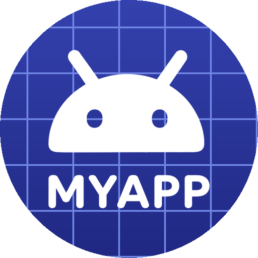
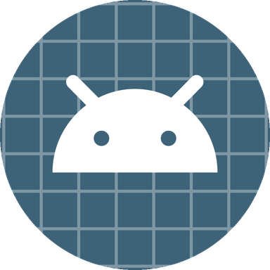

使い方ガイド
MYAPPとMYFILESを使い始める方法、基本操作、ご利用前の注意事項をご案内します。
01 インストール
現在はAndroid向けの初期テスト版です。Google Playからの配信は今後予定しています。
- 公式トップページから使いたいアプリのAPKをダウンロードします。
- ダウンロードしたAPKを開きます。Androidが確認を求める場合は、配布元がこの公式サイトのGitHub Releasesであることを確認したうえで、利用しているブラウザーなどに必要なインストール許可を与えます。
- インストールを完了し、アプリを開きます。インストールが終わったら不要な提供元のインストール許可を解除できます。
以前のデバッグ版とは署名が異なるため、上書きできない場合があります。アンインストールするとアプリ内の設定やスキャン書類が失われる場合があります。必要なデータを別途保存し、開けることを確認してから操作してください。

02 MYAPP
アプリの整理・検索をまとめて、必要なアプリにすばやくアクセスするランチャーです。
カテゴリーとフォルダで整理する
- カテゴリーの「＋」から使いたい分類を追加します。
- アプリアイコンを長押しし、移動したいカテゴリーへドラッグします。
- 関連するアプリをフォルダにまとめることもできます。
検索する
「アプリ検索」に名前を入力すると登録アプリを絞り込めます。「Google検索」はWeb検索に使います。
ホームアプリと生活メモ
設定からMYAPPをホームアプリとして使用できます。普段のホームアプリのまま、MYAPPを通常アプリとして使うことも可能です。生活メモ・予定を活用して予定を管理できます。
MYFILESへ切り替える
MYFILESを別途インストールすると、MYAPPのMYFILESボタンからファイル管理へ移動できます。
MYAPPをダウンロード ↓
03 MYFILES
写真・動画・書類をカテゴリーに分け、必要なときに探して利用するファイル管理アプリです。単独でも利用できます。
ファイルを読み込む
- 「取込」を開き、「ファイルの追加」または「Googleフォト」を選びます。
- 端末内のフォルダやファイル、または選択画面から写真・動画を選びます。
- 確認画面で読み込みを確定します。登録内容を収納庫などで確認してください。
カテゴリーで整理・検索
カテゴリーを作り、写真などを長押しして移動します。上部の検索窓はMYFILESに登録したファイルが対象です。削除時には対象をよく確認し、大切なファイルはバックアップしてください。
紙の書類をスキャンする
- 「スキャン」を押し、書類を撮影します。
- 用途に合った保存形式（PDFまたはJPEG）を選びます。
- 証明写真や身分証など、画像形式が必要な場合はJPEGを利用します。既存のPDFもJPEG保存できます。
Google Driveへ保存・検索
「Drive」からGoogleアカウントを連携し、保存したいファイルを選択してアップロードします。Driveの画面ではMYFILESから保存したファイルや個別にアクセスを許可されたファイルを検索できます。Drive全体を検索する機能ではありません。
メール添付・外部サイトへの提出
- メールや提出先サイトの「ファイルを選択」を開きます。
- Android標準のファイル選択画面のメニューからMYFILESを選択します。
- カテゴリー内の写真や書類を選び、提出前に内容を確認します。
写真専用の選択画面など、相手のアプリによってはMYFILESが選べない場合があります。画像だけを受け付ける画面ではPDFは表示されないことがあります。
MYFILESをダウンロード ↓04 ご利用前の注意事項
- 両アプリは初期テスト版です。不具合や使用環境による制限が残っている可能性があります。
- アプリ内のスキャン書類や分類情報は、アプリの削除や初期化で失われる場合があります。重要なデータは別途バックアップしてください。
- Google Drive連携では利用者自身のGoogleアカウントでアクセス許可を行います。公開前の認証設定によっては連携できない場合があります。
- 不具合報告に免許証などの個人情報を添付しないでください。
お問い合わせ・改善提案：myapp.team2026@gmail.com